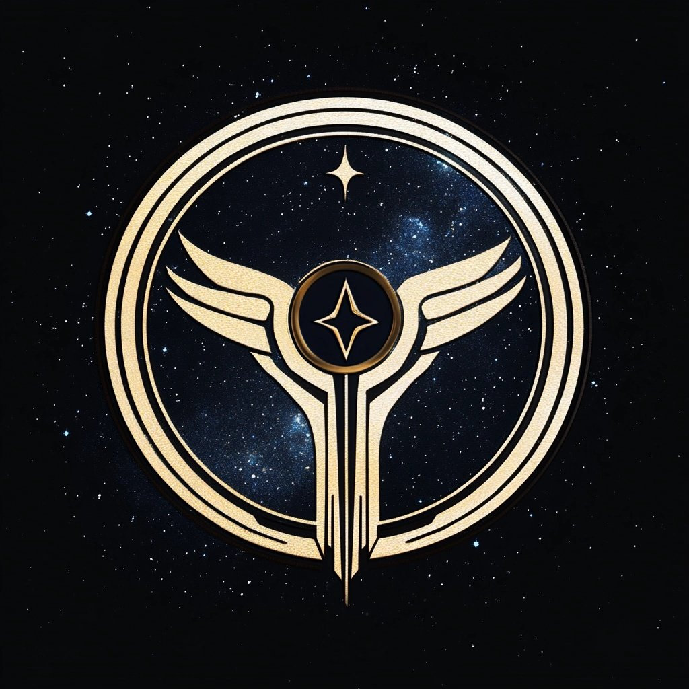

HALCYON GOVERNMENT
 The Halcyon Government, officially known as the Intergalactic Union (IU), is an expansive and enlightened coalition representing hundreds of member galaxies united by shared values of exploration, scientific advancement, and peaceful cooperation. Spanning an unprecedented scale, the Union facilitates collaboration between myriad civilizations, each contributing their unique cultural, technological, and philosophical insights to foster mutual growth and understanding.
At the heart of Halcyon's governance is the Grand Assembly, an intergalactic legislative body composed of delegates from every member galaxy. These representatives deliberate and legislate on matters impacting the collective well-being, from intergalactic trade agreements to exploratory directives and diplomatic missions. Complementing the Grand Assembly is the Directorate, a smaller executive council tasked with implementing decisions, managing the vast intergalactic infrastructure, and overseeing diplomatic and exploratory operations.
Central to the Union's identity is its advanced network of artificial intelligences, most prominently exemplified by Janus, the overseer of the Intergalactic Portal Network. These sophisticated synthetic minds maintain seamless communication, transportation, and coordination across millions of light-years, ensuring unity and operational efficiency. While the Union prides itself on technological integration, it equally values cultural diversity, fostering an environment of respect and open dialogue among its diverse members.
The Intergalactic Union is not merely a political or economic alliance; it embodies the pinnacle of cosmic civilization, dedicated to exploring the unknown, protecting the sanctity of natural worlds, and upholding principles of scientific curiosity and interstellar peace. Through combined strength and collaborative vision, the IU continuously strives toward a future where boundaries are erased, mysteries unraveled, and intergalactic harmony prevails.